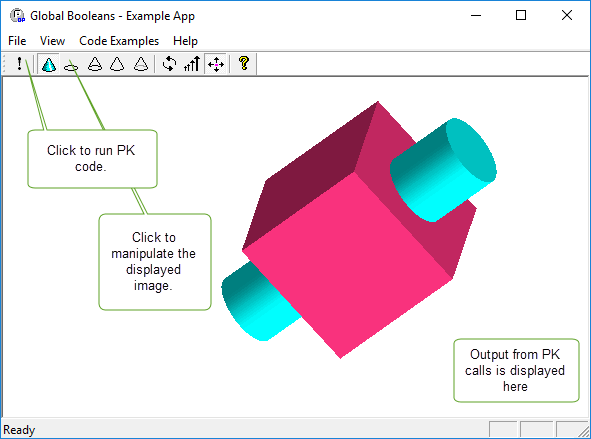
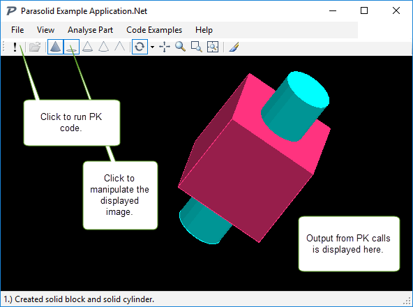

| |
Parasolid Source Code Collateral |
| <<< Further Implementation Decisions | Chapters | PK Interface Programming Concepts >>> |
This chapter describes the source code collateral supplied with Parasolid. This collateral comprises sample code to help you get started with your own application and User Guides to help you set up and view the source code examples.
The following Parasolid source code collateral is provided:
A support tool for viewing and analysing XT data.
Two Example Applications, with demonstrations ranging from primitive model creation through to graphical output and importing data.
Supporting the example applications are images, descriptions and detailed implementation notes.
The Parasolid source code collateral is provided as part of the Parasolid Jumpstart Kit DVD.
For more information, see Parasolid Map.PDF available after installation of the Parasolid Jumpstart Kit.
|
Note: All code examples provided in this collateral set are classed as sample code and are intended for educational purposes only. |
Parasolid Workshop.Net is an application for viewing and analysing XT data that is written in C# and utilises the Microsoft.Net Framework.
Parasolid Workshop.Net is shipped with full source code. Written in C#, and developed using Microsoft Visual Studio, Parasolid Workshop.Net makes use of the C# Binding for Parasolid, demonstrates best-practise guidelines for Parasolid application development, and can be used for prototyping Parasolid-powered applications and viewing XT files.
|
Note: Parasolid Workshop.NET is not for redistribution. |
Parasolid Workshop.Net is built around an extensible application framework architecture, so you can develop your own add-on plugins that utilise the full range of Parasolid functionality. Parasolid Workshop.Net is shipped with a number of example plugins such as:
For more information about Parasolid Workshop.Net, see the documentation under the
Workshop.Net\Documentation
folder of your Parasolid installation.
The documentation consists of:
Figure 8-1 Parasolid Workshop.Net using multiple windows
The C++ Example Application and C# Example Application for Windows are prototyping environments that integrate Parasolid into an application.
The C++ Example Application for Windows helps you examine, build and run prototype code in a C++ environment. It is written in C++ and built using Microsoft Visual Studio within an MFC framework.
The C++ Example Application uses the OpenGL graphics library for displaying part models and consists of a single window as shown in Figure 8-2.
Figure 8-2 The C++ Example Application for Windows
For more information about the C++ Example Application for Windows see the documentation under the
Parasolid Jumpstart Kit\example_applications\C++
folder of your Parasolid installation.
The documentation consists of:
The C# Example Application for Windows helps you examine, build and run prototype code in a C# environment. It is written in C# and built using Microsoft Visual Studio.
The C# Example Application uses Windows Presentation Foundation (WPF) to display models and consists of a single window as shown in Figure 8-3 .
Figure 8-3 The C# Example Application for Windows
For more information about the C# Example Application for Windows see the documentation under the
Parasolid Jumpstart Kit\example_applications\C#
folder of your Parasolid installation.
The documentation consists of:
| <<< Further Implementation Decisions | Chapters | PK Interface Programming Concepts >>> |